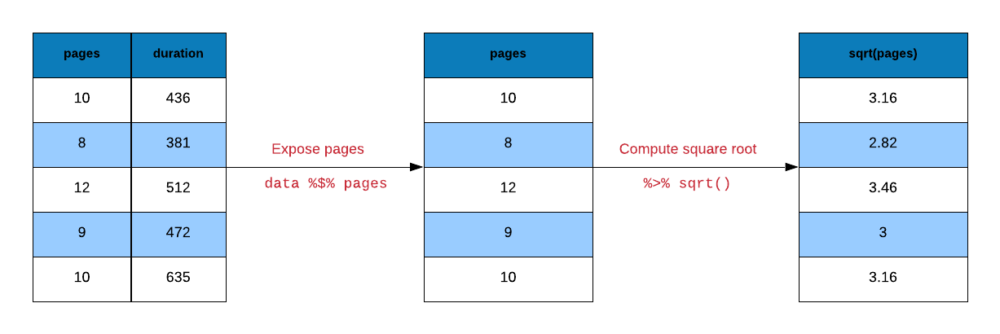
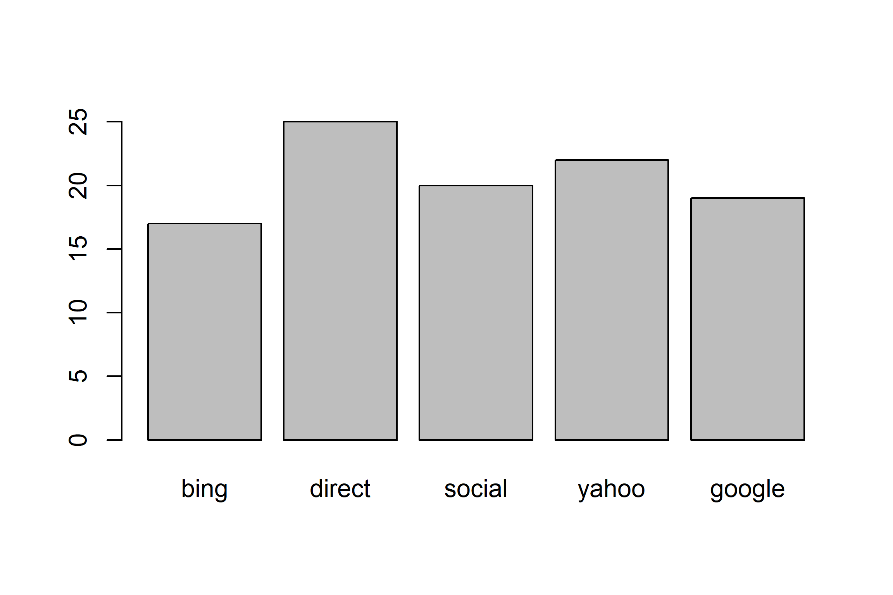
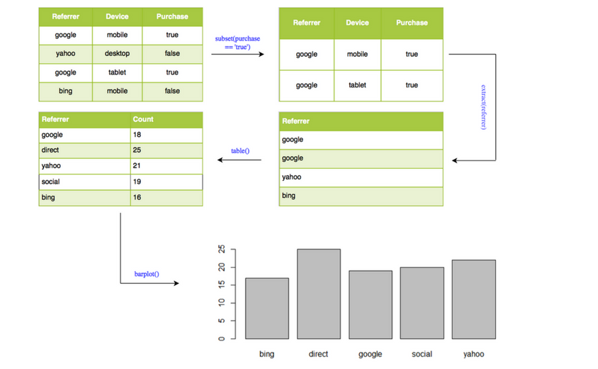
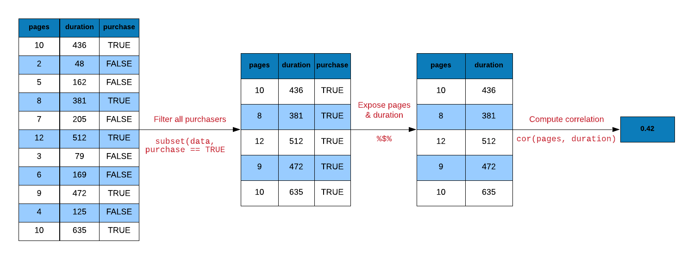
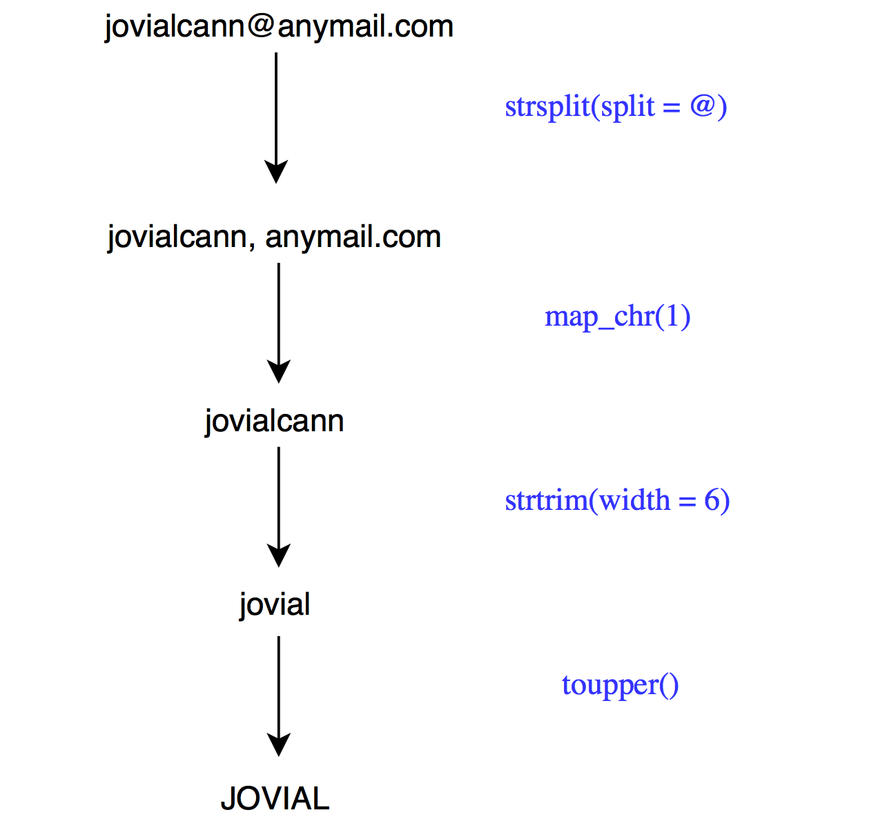

# placeholder: pipe into a non-first argument
mtcars |>
lm(mpg ~ disp, data = _) |>
coef()(Intercept) disp
29.59985476 -0.04121512 # shorthand function of one argument, then continue the chain
1:5 |>
(\(x) x^2)() |>
sum()[1] 55R code contain a lot of parentheses in case of a sequence of multiple operations. When you are dealing with complex code, it results in nested function calls which are hard to read and maintain. The magrittr package by Stefan Milton Bache provides pipes enabling us to write R code that is readable.
Pipes allow us to clearly express a sequence of multiple operations by:
The examples in this chapter use the base R pipe |>, available in R 4.1 and later with no extra package. It forwards the value on its left into the first argument of the function on its right, letting us read a sequence of operations from left to right (or top to bottom).
Older code — including the first edition of this chapter — used the magrittr pipe %>% and its companions documented in ?magrittr::operators. Those operators are kept only for reading inherited code; every example below uses |> together with pull()/pluck() and base assignment instead (see the data-extraction section).
|> vs %>% at a glance| Topic | Base pipe \|> (this book) |
magrittr %>% (inherited code) |
|---|---|---|
| Package | None — syntax in R >= 4.1 | magrittr (loaded with the tidyverse) |
| How it works | Implemented in the R parser; no runtime pipe object | A regular function call, with a small overhead per step |
| Default | Forwards into the first argument | Forwards into the first argument |
| Other argument | Placeholder _: mtcars \|> lm(mpg ~ disp, data = _) |
Dot .: mtcars %>% lm(mpg ~ disp, data = .) |
| Inline function | \(x): 1:5 \|> (\(x) x^2)() \|> sum() |
. shorthand: 1:5 %>% (function(x) x^2) %>% sum() |
For first-argument chains — every example in this book — the two pipes read identically, so inherited %>% code can be read as |>:
# placeholder: pipe into a non-first argument
mtcars |>
lm(mpg ~ disp, data = _) |>
coef()(Intercept) disp
29.59985476 -0.04121512 # shorthand function of one argument, then continue the chain
1:5 |>
(\(x) x^2)() |>
sum()[1] 55We will use the following R packages:
library(magrittr)
library(readr)
library(dplyr)
library(stringr)
library(purrr)ecom <-
read_csv('https://raw.githubusercontent.com/rsquaredacademy/datasets/master/web.csv',
col_types = cols_only(
referrer = col_factor(levels = c("bing", "direct", "social", "yahoo", "google")),
n_pages = col_double(), duration = col_double(), purchase = col_logical()
)
)
ecom# A tibble: 1,000 × 4
referrer n_pages duration purchase
<fct> <dbl> <dbl> <lgl>
1 google 1 693 FALSE
2 yahoo 1 459 FALSE
3 direct 1 996 FALSE
4 bing 18 468 TRUE
5 yahoo 1 955 FALSE
6 yahoo 5 135 FALSE
7 yahoo 1 75 FALSE
8 direct 1 908 FALSE
9 bing 19 209 FALSE
10 google 1 208 FALSE
# ℹ 990 more rowsWe will create a smaller data set from the above data to be used in some examples:
ecom_mini <- slice_sample(ecom, n = 10)
ecom_mini# A tibble: 10 × 4
referrer n_pages duration purchase
<fct> <dbl> <dbl> <lgl>
1 google 18 468 FALSE
2 google 1 169 FALSE
3 direct 14 406 TRUE
4 social 17 204 FALSE
5 bing 18 198 FALSE
6 yahoo 15 150 FALSE
7 bing 20 540 FALSE
8 social 20 220 FALSE
9 google 1 369 FALSE
10 yahoo 18 270 TRUE Let us start with a simple example. You must be aware of head(). If not, do not worry. It returns the first few observations/rows of data. We can specify the number of observations it should return as well. Let us use it to view the first 10 rows of our data set.
head(ecom, 10)# A tibble: 10 × 4
referrer n_pages duration purchase
<fct> <dbl> <dbl> <lgl>
1 google 1 693 FALSE
2 yahoo 1 459 FALSE
3 direct 1 996 FALSE
4 bing 18 468 TRUE
5 yahoo 1 955 FALSE
6 yahoo 5 135 FALSE
7 yahoo 1 75 FALSE
8 direct 1 908 FALSE
9 bing 19 209 FALSE
10 google 1 208 FALSE Now let us do the same but with |>.
ecom |> head(10)# A tibble: 10 × 4
referrer n_pages duration purchase
<fct> <dbl> <dbl> <lgl>
1 google 1 693 FALSE
2 yahoo 1 459 FALSE
3 direct 1 996 FALSE
4 bing 18 468 TRUE
5 yahoo 1 955 FALSE
6 yahoo 5 135 FALSE
7 yahoo 1 75 FALSE
8 direct 1 908 FALSE
9 bing 19 209 FALSE
10 google 1 208 FALSE Time to try a slightly more challenging example. We want the square root of n_pages column from the data set.
y <- sqrt(ecom_mini$n_pages)Let us break down the above computation into small steps:
n_pages column from ecom datay
Let us reproduce y using pipes.
# extract the n_pages column and assign it to y
y <-
ecom_mini |>
pull(n_pages)
# compute the square root of y and assign it back to y
y <- sqrt(y)Another way to compute the square root of y is shown below.
y <-
ecom_mini |>
pull(n_pages) |>
sqrt()Let us look at a data visualization example. We will create a bar plot to visualize the frequency of different referrer types that drove purchasers to the website. Let us look at the steps involved in creating the bar plot:
referrer columntable()barplot()barplot(table(subset(ecom, purchase)$referrer))

ecom |>
subset(purchase) |>
pull('referrer') |>
table() |>
barplot()
Correlation is a statistical measure that indicates the extent to which two or more variables fluctuate together. In R, correlation is computed using cor(). Let us look at the correlation between the number of pages browsed and time spent on the site for visitors who purchased some product. Below are the steps for computing correlation:
n_pages and duration columnscor() to compute the correlation
# without pipe
ecom1 <- subset(ecom, purchase)
cor(ecom1$n_pages, ecom1$duration)[1] 0.4290905# with pipe
ecom |>
filter(purchase) |>
summarise(cor = cor(n_pages, duration))# A tibble: 1 × 1
cor
<dbl>
1 0.429Let us look at a regression example. We regress time spent on the site on number of pages visited. Below are the steps involved in running the regression:
duration and n_pages columns from ecom datalm()lm() to summary()summary(lm(duration ~ n_pages, data = ecom))
Call:
lm(formula = duration ~ n_pages, data = ecom)
Residuals:
Min 1Q Median 3Q Max
-386.45 -213.03 -38.93 179.31 602.55
Coefficients:
Estimate Std. Error t value Pr(>|t|)
(Intercept) 404.803 11.323 35.750 < 2e-16 ***
n_pages -8.355 1.296 -6.449 1.76e-10 ***
---
Signif. codes: 0 '***' 0.001 '**' 0.01 '*' 0.05 '.' 0.1 ' ' 1
Residual standard error: 263.3 on 998 degrees of freedom
Multiple R-squared: 0.04, Adjusted R-squared: 0.03904
F-statistic: 41.58 on 1 and 998 DF, p-value: 1.756e-10ecom |>
with(lm(duration ~ n_pages)) |>
summary()
Call:
lm(formula = duration ~ n_pages)
Residuals:
Min 1Q Median 3Q Max
-386.45 -213.03 -38.93 179.31 602.55
Coefficients:
Estimate Std. Error t value Pr(>|t|)
(Intercept) 404.803 11.323 35.750 < 2e-16 ***
n_pages -8.355 1.296 -6.449 1.76e-10 ***
---
Signif. codes: 0 '***' 0.001 '**' 0.01 '*' 0.05 '.' 0.1 ' ' 1
Residual standard error: 263.3 on 998 degrees of freedom
Multiple R-squared: 0.04, Adjusted R-squared: 0.03904
F-statistic: 41.58 on 1 and 998 DF, p-value: 1.756e-10We want to extract the first name (jovial) from the below email id and convert it to upper case. Below are the steps to achieve this:
@ using str_split()pluck()str_sub()str_to_upper()
email <- 'jovialcann@anymail.com'
# without pipe
str_to_upper(str_sub(str_split(email, '@')[[1]][1], start = 1, end = 6))[1] "JOVIAL"# with pipe
email |>
str_split(pattern = '@') |>
pluck(1, 1) |>
str_sub(start = 1, end = 6) |>
str_to_upper()[1] "JOVIAL"Another method that uses map_chr() from the purrr package.
email |>
str_split(pattern = '@') |>
map_chr(1) |>
str_sub(start = 1, end = 6) |>
str_to_upper()[1] "JOVIAL"Let us turn our attention towards data extraction. dplyr and purrr provide pull() and pluck() as readable alternatives to $, [ and [[:
pull() extracts a column as a vector (like $)pluck() extracts an element from a list or vector (like [[)To extract a specific column using the column name, we mention the name of the column in single/double quotes within [ or [[. In case of $, we do not use quotes.
# base
ecom_mini['n_pages']# A tibble: 10 × 1
n_pages
<dbl>
1 18
2 1
3 14
4 17
5 18
6 15
7 20
8 20
9 1
10 18# tidyverse
select(ecom_mini, n_pages)# A tibble: 10 × 1
n_pages
<dbl>
1 18
2 1
3 14
4 17
5 18
6 15
7 20
8 20
9 1
10 18We can extract columns using their index position. Keep in mind that index position starts from 1 in R. In the below example, we show how to extract n_pages column but instead of using the column name, we use the column position.
# base
ecom_mini[2]# A tibble: 10 × 1
n_pages
<dbl>
1 18
2 1
3 14
4 17
5 18
6 15
7 20
8 20
9 1
10 18# tidyverse
select(ecom_mini, 2)# A tibble: 10 × 1
n_pages
<dbl>
1 18
2 1
3 14
4 17
5 18
6 15
7 20
8 20
9 1
10 18One important differentiator between [ and [[ is that [[ will return an atomic vector and not a data.frame. $ will also return an atomic vector. In the tidyverse, we use pull() in place of $.
# base
ecom_mini$n_pages [1] 18 1 14 17 18 15 20 20 1 18# tidyverse
pull(ecom_mini, n_pages) [1] 18 1 14 17 18 15 20 20 1 18Let us convert ecom_mini into a list using as.list() as shown below:
ecom_list <- as.list(ecom_mini)To extract elements of a list, we use pluck(). It is the tidyverse alternative for [[.
# base
ecom_list[['n_pages']] [1] 18 1 14 17 18 15 20 20 1 18# tidyverse
pluck(ecom_list, 'n_pages') [1] 18 1 14 17 18 15 20 20 1 18# base
ecom_list[[1]] [1] google google direct social bing yahoo bing social google yahoo
Levels: bing direct social yahoo google# tidyverse
pluck(ecom_list, 1) [1] google google direct social bing yahoo bing social google yahoo
Levels: bing direct social yahoo googleWe can extract the elements of a list by name using pluck() as well.
# base
ecom_list$n_pages [1] 18 1 14 17 18 15 20 20 1 18# tidyverse
pluck(ecom_list, "n_pages") [1] 18 1 14 17 18 15 20 20 1 18magrittr offer alternatives for arithemtic operations as well. We will look at a few examples below.
add()subtract()multiply_by()multiply_by_matrix()divide_by()divide_by_int()mod()raise_to_power()1:10 + 1 [1] 2 3 4 5 6 7 8 9 10 11add(1:10, 1) [1] 2 3 4 5 6 7 8 9 10 11`+`(1:10, 1) [1] 2 3 4 5 6 7 8 9 10 111:10 * 3 [1] 3 6 9 12 15 18 21 24 27 30multiply_by(1:10, 3) [1] 3 6 9 12 15 18 21 24 27 30`*`(1:10, 3) [1] 3 6 9 12 15 18 21 24 27 301:10 / 2 [1] 0.5 1.0 1.5 2.0 2.5 3.0 3.5 4.0 4.5 5.0divide_by(1:10, 2) [1] 0.5 1.0 1.5 2.0 2.5 3.0 3.5 4.0 4.5 5.0`/`(1:10, 2) [1] 0.5 1.0 1.5 2.0 2.5 3.0 3.5 4.0 4.5 5.01:10 ^ 2 [1] 1 2 3 4 5 6 7 8 9 10 11 12 13 14 15 16 17 18
[19] 19 20 21 22 23 24 25 26 27 28 29 30 31 32 33 34 35 36
[37] 37 38 39 40 41 42 43 44 45 46 47 48 49 50 51 52 53 54
[55] 55 56 57 58 59 60 61 62 63 64 65 66 67 68 69 70 71 72
[73] 73 74 75 76 77 78 79 80 81 82 83 84 85 86 87 88 89 90
[91] 91 92 93 94 95 96 97 98 99 100raise_to_power(1:10, 2) [1] 1 4 9 16 25 36 49 64 81 100`^`(1:10, 2) [1] 1 4 9 16 25 36 49 64 81 100There are alternatives for logical operators as well. We will look at a few examples below.
and()or()equals()not()is_greater_than()is_weakly_greater_than()is_less_than()is_weakly_less_than()1:10 > 5 [1] FALSE FALSE FALSE FALSE FALSE TRUE TRUE TRUE TRUE TRUEis_greater_than(1:10, 5) [1] FALSE FALSE FALSE FALSE FALSE TRUE TRUE TRUE TRUE TRUE`>`(1:10, 5) [1] FALSE FALSE FALSE FALSE FALSE TRUE TRUE TRUE TRUE TRUE1:10 >= 5 [1] FALSE FALSE FALSE FALSE TRUE TRUE TRUE TRUE TRUE TRUEis_weakly_greater_than(1:10, 5) [1] FALSE FALSE FALSE FALSE TRUE TRUE TRUE TRUE TRUE TRUE`>=`(1:10, 5) [1] FALSE FALSE FALSE FALSE TRUE TRUE TRUE TRUE TRUE TRUE